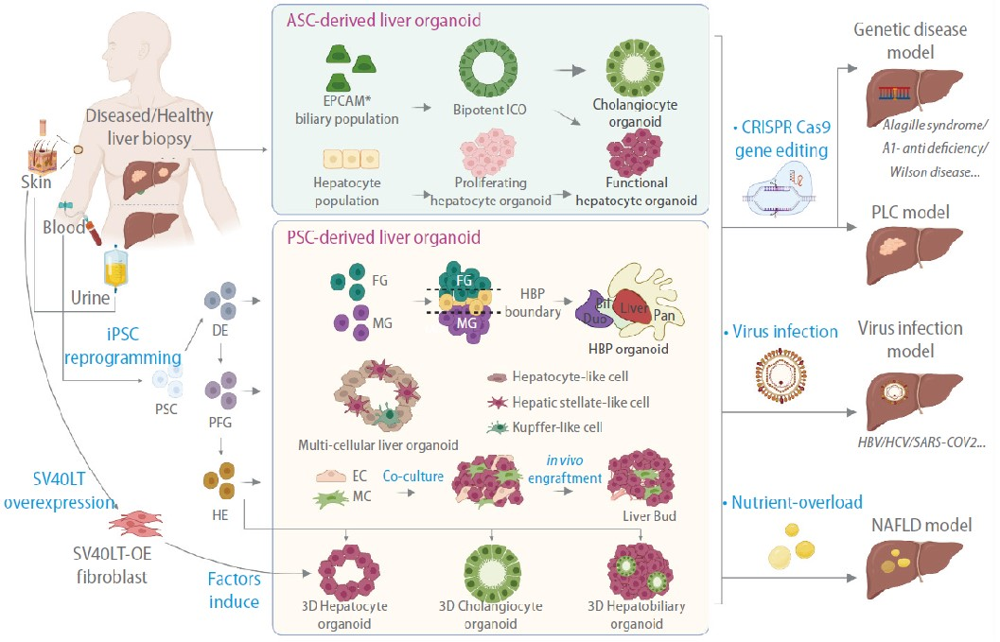
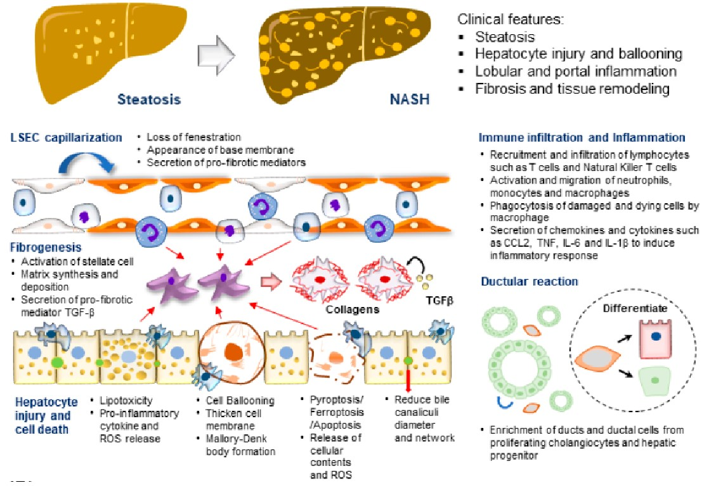
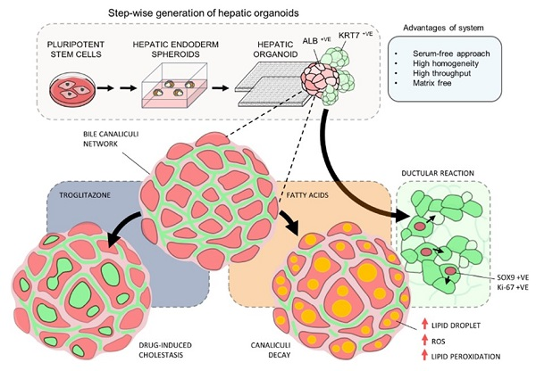
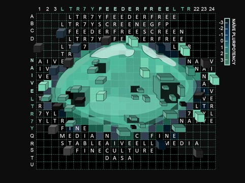
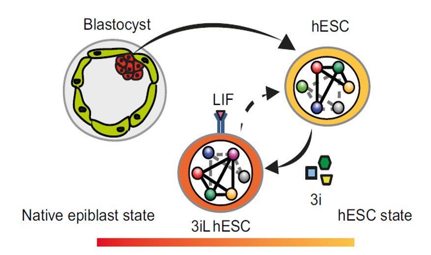
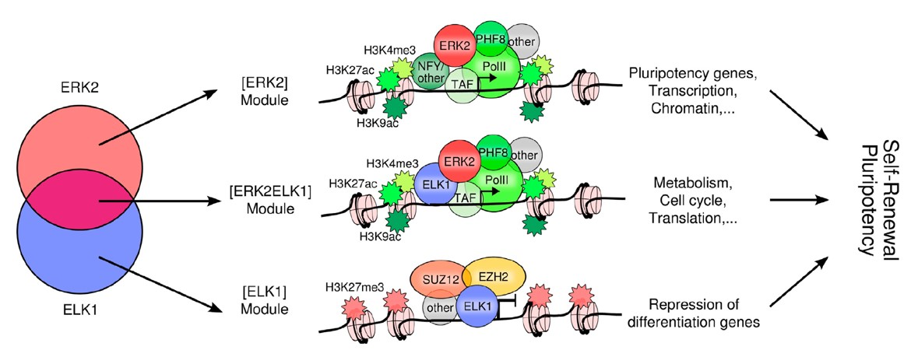
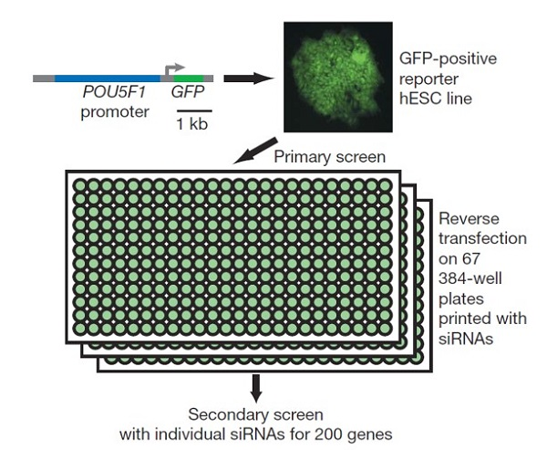
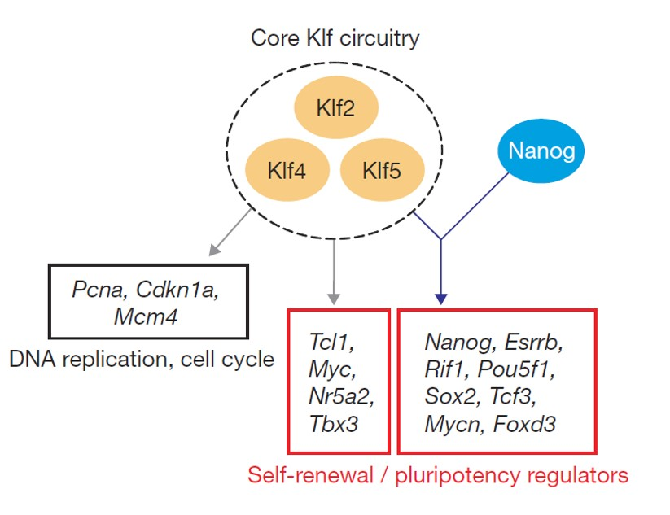

Selected Publications
A Decade of Liver Organoids: Advances In Disease Modeling
Yue Liu, Jian-Ying Sheng, Chun-Fang Yang, Junjun Ding and Yun-Shen Chan (2023) Clinical and Molecular Hepatology.
Study abstract
Liver organoids are three-dimensional cellular tissue models in which cells interact to form unique structures in culture. During the past 10 years, liver organoids with various cellular compositions, structural features, and functional properties have been described. Methods to create these advanced human cell models range from simple tissue culture techniques to complex bioengineering approaches. Liver organoid culture platforms have been used in various research fields, from modeling liver diseases to regenerative therapy. This review discusses how liver organoids are used to model disease, including hereditary liver diseases, primary liver cancer, viral hepatitis, and nonalcoholic fatty liver disease. Specifically, we focus on studies that used either of two widely adopted approaches: differentiation from pluripotent stem cells or epithelial organoids cultured from patient tissues. These approaches have enabled the generation of advanced human liver models and, more importantly, the establishment of patient-tailored models for evaluating disease phenotypes and therapeutic responses at the individual level.
Advancements in MAFLD Modeling with Human Cell and Organoid Models
Shi-Xiang Wang, Ji-Song Yan, Yun-Shen Chan (2022) International Journal of Molecular Sciences.
Study abstract
Metabolic (dysfunction) associated fatty liver disease (MAFLD) is one of the most prevalent liver diseases and has no approved therapeutics. The high failure rates witnessed in late-phase MAFLD drug trials reflect the complexity of the disease, and how the disease develops and progresses remains to be fully understood. In vitro, human disease models play a pivotal role in mechanistic studies to unravel novel disease drivers and in drug testing studies to evaluate human-specific responses. This review focuses on MAFLD disease modeling using human cell and organoid models. The spectrum of patient-derived primary cells and immortalized cell lines employed to model various liver parenchymal and non-parenchymal cell types essential for MAFLD development and progression is discussed. Diverse forms of cell culture platforms utilized to recapitulate tissue-level pathophysiology in different stages of the disease are also reviewed.
Krϋppel-like factor 5 rewires NANOG regulatory network to activate human naive pluripotency specificLTR7Ys and promote naive pluripotency
Zhipeng Ai, Xinyu Xiang, Yangquan Xiang, Iwona Szczerbinska, Yuli Qian, Xiao Xu, Chenyang Ma, Yaqi Su, Bing Gao, Hao Shen, Muhammad Nadzim Bin Ramli, Di Chen, Yue Liu, Jia-jie Hao, Huck Hui Ng, Dan Zhang, Yun-Shen Chan#, Wanlu Liu#, Hongqing Liang# (2020) Cell Reports.
Study highlights
- Human naive pluripotency enriched LTR7Ys are activated by KLF4 and KLF5
- KLF4 and KLF5 have both overlapping and distinct gene and TE targets
- KLF5 rewires NANOG binding affinity from LTR7s to LTR7Ys
- KLF5-NANOG activates LTR7Ys to boost naive gene expression and expands cell potency

Human Pluripotent Stem Cell-Derived Organoids as Models of Liver Diseases
Muhammad Nadzim Bin RAMLI, Yee Siang LIM, Hongqing LIANG, Kevin Andrew Uy GONZALES, Weiquan TNG, Cheng Peow TAN, Iwona SZCZERBINSKA, Chwee Tat KOE, Lewis LU, Ka Man YU, Lai Ping YAW, John Soon Yew LIM, Graham WRIGHT, Asim SHABBIR, Yock Young DAN, Huck-Hui NG, Yun-Shen CHAN (2020) Gastroenterology.
Study highlights
A Chemically Defined Feeder-free System for the Establishment and Maintenance of the Human Naive Pluripotent State
Szczerbinska I, Gonzales KAU, Cukuroglu E, Ramli N, Tan CP, Göke J, Ng HH, and Chan YS. (2019) Stem Cell Report
- 
- High-throughput screen to identify compounds liberating naïve hESCs from feeder dependency
- Establishment and maintenance of human feeder-independent naive embryonic (FINE) stem cells
- FINE cells are molecularly equivalent to 4iLA hESCs
- FINE cells offer enhanced genomic stability and amenability to introduction of exogenous DNA
Study highlights
Induction of a Human Pluripotent State with Distinct Regulatory Circuitry that Resembles Preimplantation Epiblast
Chan YS, Göke J, Ng JH, Lu X, Gonzales KA, Tan CP, Tng WQ, Hong ZZ, Lim YS, Ng HH. (2013) Cell Stem Cell.
Study highlights
- A combination of three small molecules induces a LIF-dependent hESC state (3iL)
- 3iL hESCs share an expression signature with native preimplantation epiblast
- The transcriptional regulatory circuitry is remodeled in 3iL hESCs
- Identification of enhancers of human preimplantation epiblast genes
Genome-wide kinase-chromatin interactions reveal the regulatory network of ERK signaling in human embryonic stem cells
Göke J, Chan YS, Yan J, Vingron M, Ng HH. (2013) Molecular Cell
Study highlights
- 
- Genome-wide kinase-chromatin interactions for ERK2 in hESCs.
- ERK2 targets noncoding, histone, cell-cycle, and metabolism genes.
- Motif finding and colocalization analysis reveal candidate partners of ERK2.
- ELK1 colocalizes with ERK2 and Polycomb and is linked to pluripotency in hESCs.
A genome-wide RNAi screen reveals determinants of human embryonic stem cell identity
Chia NY*, Chan YS*, Feng B*, Lu X, Orlov YL, Moreau D, Kumar P, Yang L, Jiang J, Lau MS, Huss M, Soh BS, Kraus P, Li P, Lufkin T, Lim B, Clarke ND, Bard F, Ng HH. (2010) Nature
Study abstract
The derivation of human ES cells (hESCs) from human blastocysts represents one of the milestones in stem cell biology. The full potential of hESCs in research and clinical applications requires a detailed understanding of the genetic network that governs the unique properties of hESCs. Here, we report a genome-wide RNA interference screen to identify geneswhich regulate self-renewal and pluripotency properties in hESCs. Interestingly, functionally distinct complexes involved in transcriptional regulation and chromatin remodelling are among the factors identified in the screen. To understand the roles of these potential regulators of hESCs, we studied transcription factor PRDM14 to gain new insights into its functional roles in the regulation of pluripotency. We showed that PRDM14 regulates directly the expression of key pluripotency gene POU5F1 through its proximal enhancer. Genome-wide location profiling experiments revealed that PRDM14 colocalized extensively with other key transcription factors such as OCT4, NANOG and SOX2, indicating that PRDM14 is integrated into the core transcriptional regulatory network. More importantly, in a gain of-function assay, we showed that PRDM14 is able to enhance the efficiency of reprogramming of human fibroblasts in conjunction with OCT4, SOX2 and KLF4. Altogether, our study uncovers a wealth of novel hESC regulators wherein PRDM14 exemplifies a key transcription factor required for the maintenance of hESC identity and the reacquisition of pluripotency in human somatic cells.
A core Klf circuitry regulates self-renewal of embryonic stem cells
Jiang J, Chan YS, Loh YH, Cai J, Tong GQ, Lim CA, Robson P, Zhong S, Ng HH. (2008) Nature Cell Biology.
Study abstract
Embryonic stem (ES) cells are unique in their ability to self-renew indefinitely and maintain pluripotency. These properties require transcription factors that specify the gene expression programme of ES cells. It has been possible to reverse the highly differentiated state of somatic cells back to a pluripotent state with a combination of four transcription factors: Klf4 is one of the reprogramming factors required, in conjunction with Oct4, Sox2 and c-Myc. Maintenance of self-renewal and pluripotency of ES cells requires Oct4, Sox2 and c-Myc, but Klf4 is dispensable. Here, we show that Krüppel-like factors are required for the self-renewal of ES cells. Simultaneous depletion of Klf2, Klf4 and Klf5 lead to ES cell differentiation. Chromatin immunoprecipitation coupled to microarray assay reveals that these Klf proteins share many common targets of Nanog, suggesting a close functional relationship between these factors. Expression analysis after triple RNA interference (RNAi) of the Klfs shows that they regulate key pluripotency genes, such as Nanog. Taken together, our study provides new insight into how the core Klf circuitry integrates into the Nanog transcriptional network to specify gene expression that is unique to ES cells.